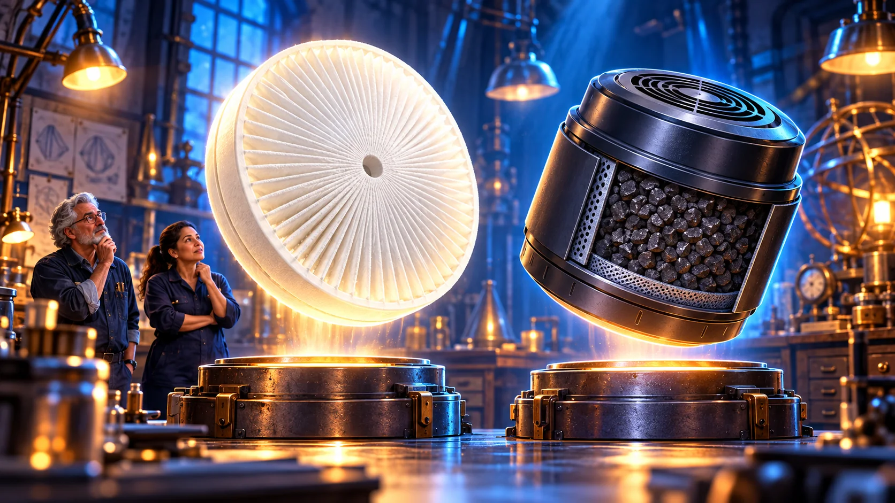
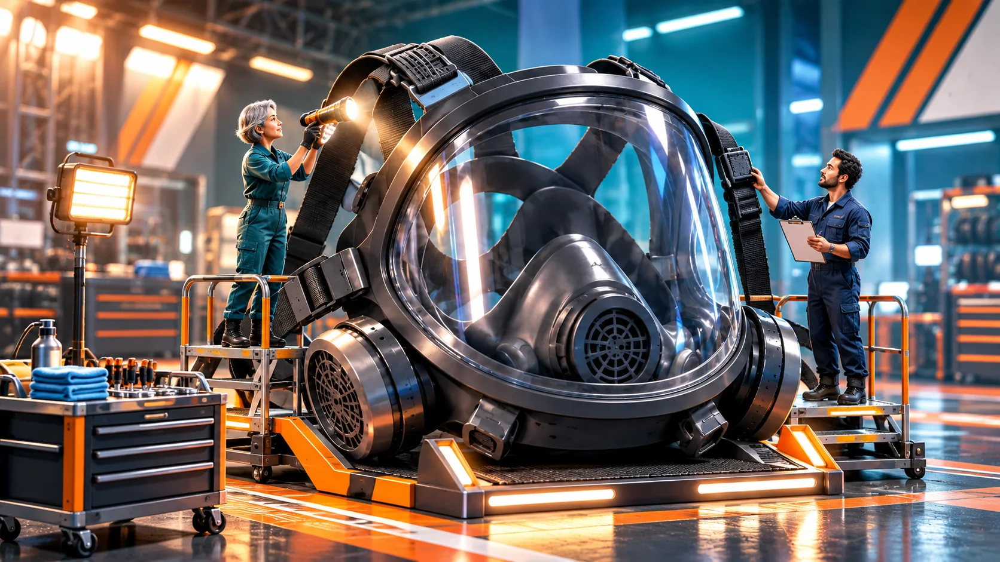

Seis misiones para proteger tu respiración.
Completa una misión para desbloquear la siguiente.


Conserva tu cuaderno y repasa las misiones completadas.
0 de 6 misiones completadas.
La copia se guarda en tu dispositivo e incluye tus notas. Úsala si cambias de carpeta o de navegador.
Se borrarán el avance y el cuaderno de este recorrido en este navegador. Guarda una copia si quieres conservarlos.
Activa JavaScript para realizar las misiones y guardar el progreso.